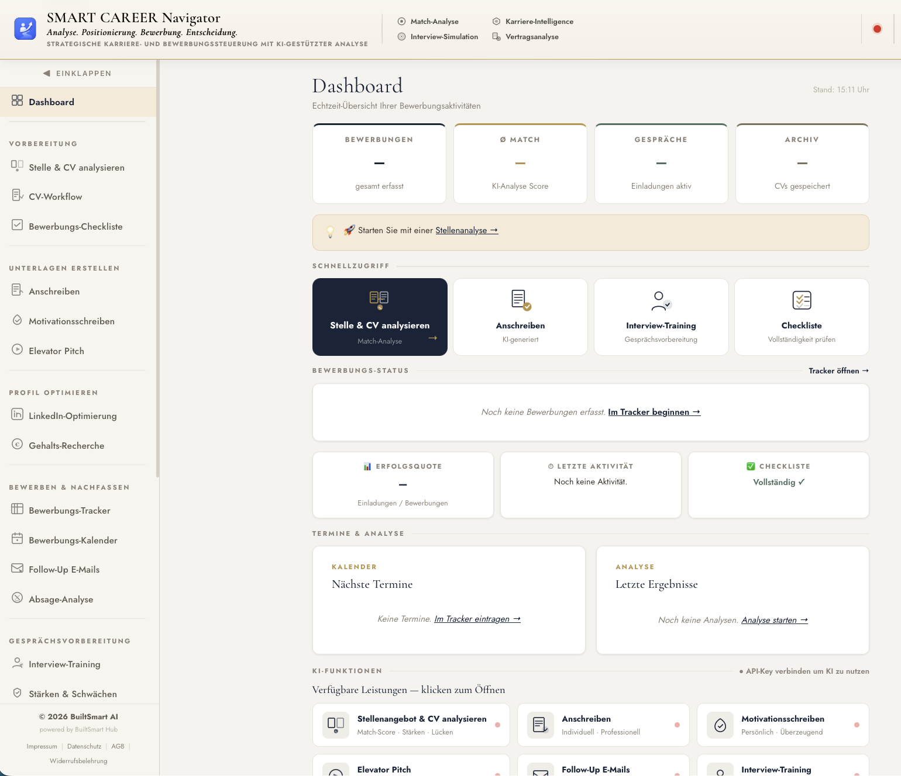

Passung sofort erkennen
Match-Score, Stärken, Lücken und konkrete Hinweise zeigen, ob Rolle, Anforderungen und Profil wirklich zusammenpassen.

Professionelle Karriere- und Bewerbungssteuerung
Browserbasierte KI-App für Bewerbungen, ATS-Optimierung, Interviews und Karriereentscheidungen.
SMART CAREER Navigator strukturiert den gesamten Bewerbungsprozess von der Stellenanalyse über ATS-optimierte Unterlagen bis zur Gesprächsvorbereitung und Entscheidung. Sie erkennen schneller, welche Rolle wirklich passt, welche Argumente zählen und welche nächsten Schritte Priorität haben.
Analysieren. Optimieren. Vorbereiten. Entscheiden.
Hauptnutzen
Die Plattform ordnet Stellen, Unterlagen, Kommunikation und Entscheidungen in einem ruhigen Workflow.
Passung, Priorität und nächste Schritte werden direkt sichtbar.
Match-Score, Stärken, Lücken und konkrete Hinweise zeigen, ob Rolle, Anforderungen und Profil wirklich zusammenpassen.
Anschreiben, Motivationsschreiben und Pitch schneller erstellen, gezielt schärfen und passend zur Stelle formulieren.
Tracker, Bewerbungsakte, Termine, Notizen und Follow-ups bleiben an einem Ort und machen nächste Schritte sichtbar.
Interview-Simulation, Stärken-Schwächen-Coaching und Gehaltsstrategie helfen, Argumente sicher vorzubereiten.
Magic Link, BuiltSmart AI Credits und optionaler Anthropic API Key bleiben klar getrennt, nachvollziehbar und flexibel nutzbar.
12 KI-Funktionen
Sechs Arbeitsbausteine bündeln die wichtigsten Funktionen der App zu einem klaren, visuell schnellen Überblick.
Vergleich
Oft viel Aufwand, wenig Struktur und kein schneller Entwurf.
Es bleibt offen, ob Rolle, Profil und Anforderungen wirklich zusammenpassen.
Mehr Nacharbeit, weniger Übersicht und keine saubere Prozesslogik.
Fragen, Argumente und Wirkung entstehen oft erst im Gespräch selbst.
Ohne Marktbezug ist die Verhandlung oft unsicher oder zu defensiv.
Risiken, Fristen und Klauseln bleiben oft zu lange unentdeckt.
Ein klarer Vorschlag, den Sie direkt prüfen und anpassen können.
Stärken, Lücken und Relevanz werden vorab sichtbar.
Status, Unterlagen und nächste Schritte bleiben gebündelt an einem Ort.
Sie üben vorab und erhalten klare Hinweise zur Antwortqualität.
Die Verhandlung kann auf Daten, Einordnung und Prioritäten aufbauen.
Die Entscheidung wird strukturierter und besser vorbereitet.
Besonderheiten
Eine Akte pro Stelle mit Stellenbeschreibung, CV, Analyse und Notizen.
Termine, Aktivität, Empfehlungen und Checklisten reagieren auf den Stand.
Lebenslauf und Stelle auf Anforderungen, Schlüsselbegriffe und Lesbarkeit prüfen.
Suchprofil anlegen und passende Portale schneller erreichen.
PDF hochladen, Klauseln erkennen und Risiken strukturiert bewerten.
Fünf Phasen per Drag & Drop, Export und Import als Sicherung.
Branchentrends, Gehalt, LinkedIn und Pitch für den Auftritt nach außen.
Dankesmails, Statusfragen, Absagen und Netzwerkansprachen passend formuliert.
Bewerbungs-Coach
Zugriff
SMART CAREER Navigator läuft im Browser. Für Trial, Kauf, Lizenzprüfung und BuiltSmart AI Credits ist ein Nutzerkonto mit Magic Link erforderlich.
Lizenzmodell
Für professionelle Anwender, die Bewerbungsprozesse strukturiert steuern, Karriereunterlagen gezielt verbessern und Gespräche fundiert vorbereiten möchten. SMART CAREER Navigator bündelt Analyse, Planung und KI-gestützte Formulierungshilfe in einer klaren Arbeitsoberfläche, damit Entscheidungen nachvollziehbarer werden und der nächste Karriereschritt sicherer gelingt.
Für Trial, Kauf, Lizenzprüfung und BuiltSmart AI Credits ist ein Nutzerkonto mit Magic Link erforderlich. Pro Lizenz ist ein persönlicher Nutzerzugriff vorgesehen; mehrere Lizenzen derselben App können über die Menge im Checkout gekauft werden.
KI-NUTZUNG BuiltSmart AI Credits oder eigener Anthropic API Key. In der Testphase 1000 Credits kostenlos.
Jahreslizenz kaufenJahreslizenz | Magic Link | persönlicher Nutzerzugriff
FAQ
Die App bündelt Analyse, Positionierung, Bewerbung und Entscheidung in einer klaren Arbeitsumgebung. Du siehst, was passt, was fehlt und was als Nächstes zählt.
Du arbeitest strukturierter, sparst manuelle Zwischenschritte und bekommst schneller belastbare Vorschläge für Unterlagen, Gespräche und Entscheidungen.
Für Fach- und Führungskräfte, Berufserfahrene und Karrierewechsler, die Bewerbungen professionell und ohne unnötige Reibung steuern möchten.
Stellenanalyse, CV-Abgleich, ATS-Optimierung, Interviewvorbereitung, Kommunikation, Vertragscheck, Tracking und Follow-ups.
ATS-Optimierung bedeutet, Lebenslauf und Bewerbungsunterlagen besser auf eine konkrete Stellenanzeige auszurichten. SMART CAREER Navigator prüft Anforderungen, Schlüsselbegriffe und Lesbarkeit und zeigt, wo Unterlagen klarer, relevanter und besser scanbar werden können.
KI unterstützt Analyse, Formulierung, Coaching und Entscheidungsunterstützung. Sie läuft über BuiltSmart AI Credits oder alternativ über einen eigenen Anthropic API Key.
Stellen, Lebensläufe, Analysen, Unterlagen, Notizen, Tracker-Einträge und Termine. Soweit die App Inhalte speichert, bleiben sie lokal im Browser und können per JSON exportiert und importiert werden.
Nein. SMART CAREER Navigator läuft browserbasiert in modernen Browsern auf Windows, macOS und anderen Systemen. Ein Installer oder eine separate lokale Installation ist nicht erforderlich.
Ja. Für Trial, Kauf, Lizenzprüfung und BuiltSmart AI Credits ist ein Nutzerkonto erforderlich. Der Login erfolgt per Magic Link.
Du kannst SMART CAREER Navigator 3 Tage kostenlos mit vollem App-Zugriff testen. Die app-spezifischen Trial-Credits werden beim Start des Trials gutgeschrieben und betragen 1000 Credits.
Die Jahreslizenz enthält den App-Zugang für einen persönlichen Nutzerzugriff. Der Preis liegt bei 119 EUR netto pro App und Jahr, die Laufzeit beträgt 12 Monate und verlängert sich automatisch um weitere 12 Monate. Die Kündigung ist bis 1 Monat vor Ablauf möglich.
BuiltSmart AI Credits gehören zum jeweiligen Nutzerkonto und sind appübergreifend innerhalb dieses Nutzerkontos nutzbar. Bezahlte AI-Credits stehen dem Nutzerkonto zur Verfügung, über das sie gekauft wurden.
Ja. Alternativ zu BuiltSmart AI Credits kann ein eigener Anthropic API Key genutzt werden. Die Abrechnung erfolgt dann direkt über Anthropic. Der Key bleibt lokal in der jeweiligen App und wird nicht an das BuiltSmart Lizenzsystem gesendet.
Ja. Mehrere Lizenzen derselben App können im Checkout über die Menge gekauft werden. Jede Lizenz ist für einen getrennten persönlichen Nutzerzugriff vorgesehen.
Mehrere App-Lizenzen schalten mehrere persönliche Nutzerzugriffe frei. BuiltSmart AI Credits werden separat pro Nutzerkonto geführt und nicht automatisch auf alle Nutzer verteilt.
Der Checkout gilt jeweils für eine App. Mehrere Lizenzen derselben App können über die Menge gekauft werden. Die Lizenz wird über die sichere Online-Zahlung im Nutzerkonto zugeordnet.
Nein. Mehrere Lizenzen bedeuten mehrere getrennte persönliche Nutzerzugriffe, keinen gemeinsamen Team-/Cloud-Arbeitsbereich.
App-Inhalte bleiben in der jeweiligen App lokal im Browser, soweit die App so gebaut ist. Es gibt keine automatische zentrale Cloud-Datenbank und keine automatische Synchronisierung zwischen Nutzern.
Nächster Schritt
SMART CAREER Navigator bündelt die wichtigsten Stationen Ihrer Bewerbungsarbeit in einer ruhigen Premium-Oberfläche.